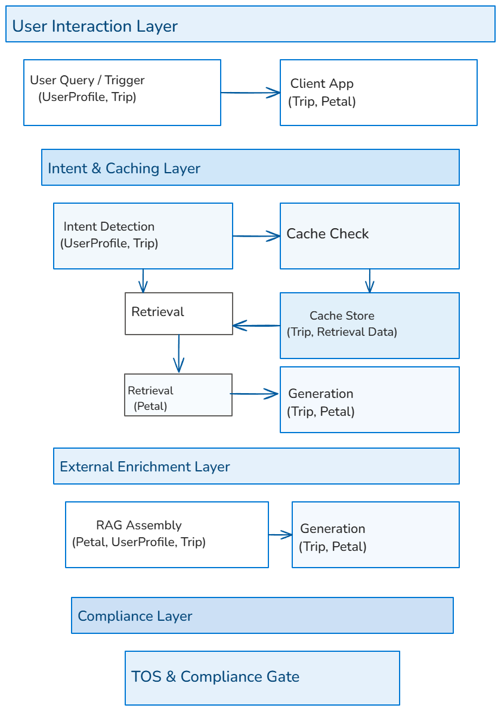

BloomTrip RAG + Caching + Storage Architecture (Legacy Extended View)¶

This document explains the Retrieval‑Augmented Generation (RAG) subsystem for BloomTrip, including caching, external API enrichment, and Azure storage mapping. It is the reference for both system flow and data contracts.
NOTE: Current MVP replaces Cosmos DB with Azure SQL and defers Redis caching until volume justifies. See
../03_architecture.mdand../04_solution-design.mdfor authoritative MVP scope.
1. Overview¶
BloomTrip uses a RAG pipeline to:
- Retrieve relevant Petal objects from Azure Cognitive Search
- Optionally enrich them with external APIs (Tripadvisor, Google Places, Bing Search, open data)
- Assemble context with UserProfile and Trip data
- Generate grounded itineraries and recommendations with Azure OpenAI
- Cache results for low‑latency reuse, respecting provider Terms of Service (TOS)
2. High‑Level Flow¶
- User Query / Trigger
- Entry points: search bar, saved petal, promo, recommendation
- Data:
UserProfile, optionalTripcontext -
Storage: Cosmos DB (profiles, trips), Blob Storage (images)
-
Intent Detection
- Extracts filters (location, tags, seasonality)
-
Transient — no storage
-
Cache Check (Azure Cache for Redis)
- Key: semantic hash of
(intent + filters + geo cluster) - Stores: retrieval sets (
Petal.id+ metadata), generated answers (Trip+Petalrefs) -
TTL: per provider TOS
-
Retrieval (Azure AI Search)
- Hybrid BM25 + vector search on
Petalindex - Filters: geo radius, tags, seasonality, accessibility, license_flags
-
Storage: AI Search index (Petals), Cosmos DB (source of truth), Blob Storage (raw payloads, images)
-
Conditional External API Enrichment
- Sources: Tripadvisor API, Google Places API, Bing Search, OSM/Wikivoyage
- Output: normalized
Petalobjects withsource_id,license_flags,last_updated -
Storage: Blob Storage (raw API responses), Cosmos DB (normalized petals)
-
RAG Assembly & Compliance Gate
- Combines: retrieved/enriched
Petal+UserProfile+Tripcontext -
Transient — unless user saves draft trip (Cosmos DB)
-
Generation (Azure OpenAI)
- Produces:
Tripitineraries,Petalrecommendations - Post‑process: attach attribution, enforce license_flags
-
Storage: Cosmos DB (itineraries), Blob Storage (generated summaries/images if allowed)
-
Cache Store (Azure Cache for Redis)
-
Saves retrieval sets and generated answers with TTL and tags for invalidation
-
Client App Delivery
- Sends structured JSON:
Trip+Petalobjects + attribution metadata - Offline mode: local device storage, sync to Cosmos DB
3. Data Models¶
Petal¶
- Core fields:
id,name,description,location,tags,seasonality,source,source_id,license_flags,embedding - Storage: Cosmos DB (normalized), Blob Storage (images), AI Search (indexed)
Trip¶
- Core fields:
trip_id,title,dates,days[].activities[].petal_id,companions,tags,status - Storage: Cosmos DB (itineraries), Blob Storage (cover images)
UserProfile¶
- Core fields:
user_id,name,language,location,saved_petals[],saved_trips[],preferences - Storage: Cosmos DB (profiles), Blob Storage (avatars)
4. TOS & Compliance Guardrails¶
- license_flags determine:
- Cache eligibility
- Attribution requirements
- Retention period
- Enforced at:
- External API Enrichment stage
- RAG Assembly stage
- Cache invalidation:
- Time‑based TTL
- Event‑based (source update, user edit)
- Seasonal (e.g., festival date passed)
5. Azure Components¶
| Stage | Azure Service(s) |
|---|---|
| Cache Check / Store | Azure Cache for Redis |
| Retrieval | Azure AI Search |
| External API Enrichment | Azure Functions / Logic Apps |
| Data Storage | Cosmos DB, Blob Storage |
| Generation | Azure OpenAI |
| Monitoring | Azure Monitor, Application Insights |
6. Developer Notes¶
- Schemas: See
/schemas/petal.schema.json,/schemas/trip.schema.json,/schemas/user_profile.schema.json - Services: Retrieval logic in
/services/retrieval/, cache logic in/services/cache/, enrichment connectors in/services/enrichment/, RAG assembly in/services/rag/ - Config: Connection strings, TTL rules, and compliance mappings in
/config/ - Tests: Cache hit/miss, retrieval filters, TOS enforcement, schema validation in
/tests/
7. Extended RAG + Caching Flow (Detailed)¶
| Step | Action | Cache Layer | Key Pattern / Notes |
|---|---|---|---|
| Intent Hash | Normalize & hash intent (filters + geo + profile class) | n/a | FNV/Murmur 64-bit |
| Retrieval Set Lookup | Check existing petal ID list | Retrieval cache | retrieval:intent:{hash}:v1 |
| Hybrid Query | BM25 + vector + filters (geo, seasonality, accessibility, license_flags) | n/a | topK raw slice then re-rank |
| Enrichment (if stale) | Tripadvisor/Google/Bing fetch | Provider cache | provider:place:{source}:{id} |
| Context Build | Assemble snippets + profile + trip deltas | n/a | Token budget guard |
| Generation | OpenAI (itinerary/refine) | Semantic cache | semantic:trip_seed:{hash} or delta:{tripId}:{scope} |
| Post-Process | Attribution + license filtering | n/a | license_flags gate |
| Store | Persist retrieval + semantic outputs | Retrieval/Semantic cache | TTL adaptive |
| Delivery | Return structured JSON | n/a | Client offline sync optional |
Cache Invalidation: event grid source update, manual edit, season boundary, license flag change, stale age threshold.
8. Discrepancies vs MVP Architecture¶
| Area | Legacy / Extended | MVP Now | Rationale |
|---|---|---|---|
| Primary DB | Cosmos DB | Azure SQL | Lower initial cost & simpler relational joins |
| Cache | Redis + multi-tier | Deferred (in-memory placeholder) | Volume not yet justifying managed Redis cost |
| Enrichment Orchestration | Functions + Data Factory + Event Grid | Functions only | Simplify early ingestion scope |
| Provider Abstraction | Full PlacesProvider interface |
Planned | Post initial trip generation success |
| Observability | Freshness + TOS dashboards | Basic latency + errors | Add freshness after baseline stability |
Last updated: September 2025 (extended section revisions)